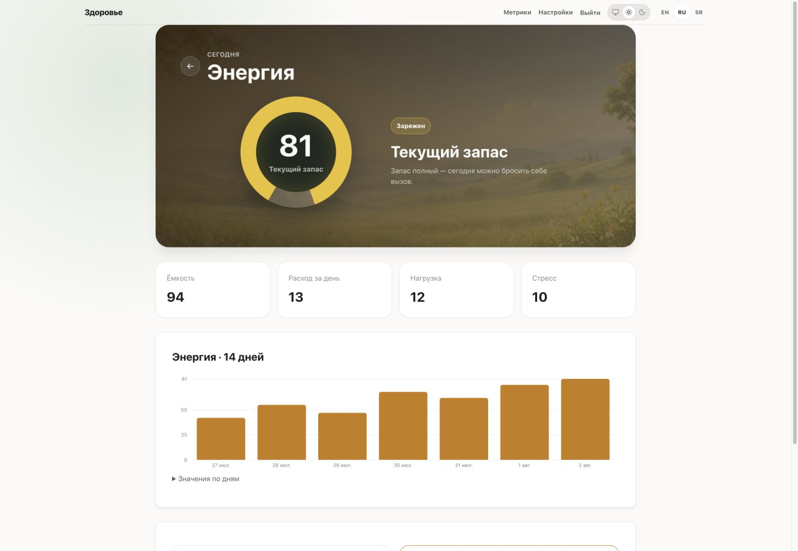

26 сентября 2026 · Реальные скриншоты · Синтетические данные
Разные домены.
Общий стиль пейзажей.
Сон — ночной луг; восстановление — голубое утро; активность — зелёный луг; кардио — фиолетовая ночь. Энергия — тёплое утро с янтарным кольцом. Пейзаж остаётся в верхней карточке, нижние поверхности следуют выбранной теме.
Статус: код iOS и веба исправлен и проверен локально. По запросу пользователя эта редакция собрана в Release и установлена на iPhone 16 Pro Max. После разблокировки пользователем приложение успешно запущено; наличие работающего процесса подтверждено через devicectl. Веб-изменения не опубликованы на сервере. Скриншоты не являются медицинскими данными пользователя.
iOS · Пять доменов
Тёмная тема и доступность
Для энергии справа — русский Accessibility XXXL и сербский обычный размер. Большой текст переносится и остаётся доступен при прокрутке.
Веб · Энергия
Текущий запас, четыре показателя, история с нулевой базой столбцов, раскрываемые значения и отдельные Server/AI Insight. Отрицательные значения сохраняются. Загрузка инсайтов не задерживает текущий запас.

Проверки
- iOS: сборка, 16 unit-тестов и 8 UI-сценариев прошли. После исправления выхода заливки графика за рамку повторены 4 UI-сценария: графики сна и все три раздела в обеих темах — успешно.
- Веб: 15 тестов Energy/Sleep/HealthDetail, TypeScript, ESLint и production build — успешно.
- Chrome: проверены широкая и мобильная версии энергии, обе темы, раскрытие истории. Ошибок и предупреждений в консоли нет.
- Вычисленные цвета инсайтов в светлой теме: тёмный текст rgb(26,26,30) на белом фоне; проверены Energy, Recovery и Sleep. Горизонтального переполнения на проверенных мобильных экранах нет.
- Исправлены просвечивание сектора кольца через полупрозрачный центр в вебе и выход заливки за рамку графика в iOS (разделы и отдельная метрика).
Ограничения: проверка iOS выполнена на iPhone 17 Pro Max Simulator; узкая ширина проверена в вебе. Поведение на реальном iPhone, серверные данные и фоновые доставки не подтверждаются этими визуальными тестами. Backend, настройки подключения и фоновая синхронизация этой правкой не менялись.
План и накопленные результаты